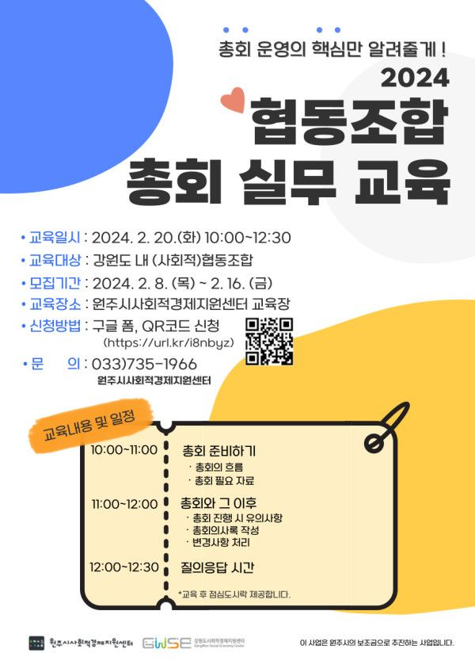

<2024 협동조합 총회 실무 교육 참가 안내>
총회 시즌(2,3월)을 맞아, 강원특별자치도 내 (사회적)협동조합을 대상으로
총회 실무 교육을 준비했습니다.
총회를 어떻게 준비해야 할지 잘 모르겠다면,
총회 이후 절차가 궁금하다면,
총회 흐름에 대한 복습이 필요하다면,
신청해주세요!
* 협동조합 총회 실무 교육 후 2024 사회적경제 지원사업 통합설명회가 진행됩니다!
자세한 내용은 아래의 신청 링크를 참고해주세요!
구글신청폼 https://url.kr/i8nbyz
*교육이 끝난 후 점심 도시락을 제공합니다.
○ 교 육 명 : 2024 협동조합 총회 실무 교육
○ 교육 일시 : 2024. 2. 20일(화) 10:00~12:30
○ 교육 대상 : 강원도 내 (사회적)협동조합
○ 모집 기간 : 2024. 2. 7(수) ~ 2. 16(금)
○ 주최‧주관 : 원주시사회적경제지원센터, 강원도사회적경제지원센터
○ 문 의 : 033-735-1966 / 최보현 주임